Improving Lemmatization of Non-Standard Languages with Joint Learning
Enrique Manjavacas & Ákos Kádár & Mike Kestemont
1 Lemmatization
Motivation
- Less than solved for morphologically rich or/and low-resource languages
- Important for downstream tasks:
- Other NLP core tasks
- Text classification, Stylometry
- Topic Modelling
What makes lemmatization difficult?
Morphological variation
Different inflectional morphological processes
- Agglutination:
- el[ler][imiz][in] (of our hands) -> el (hand)
- Fusion (infixation):
- salt[a][ba][s] (he/she was jumping) -> [salt][ar] (jumped)
- Introflexion (ablaut):
- kutub (books) -> kitab (book)
- swam -> swim
Token-lemma ambiguity
- Spanish: estado -> (estar, estado)
- English: living -> (living, live)
- English: ’s -> (be, ’s, have)
- Medieval French: que -> (qui, que1, que2, que3, que4)
- Affected by annotation conventions
- Results from orthographical variation (e.g. abbreviations)
- Inversely correlated with morphological complexity
Spelling variation
- Middle Low German: beth -> (bet, bēde, bethleme, bat, gôt)
- Middle Dutch: hoer -> (haar, zij, hun, zich, oor, horen)
- Increases token-lemma ambiguity spelling variation (conflates unrelated forms)
- Reduces the amount of evidence for a lemma (lowers token/lemma ratio)
2 Data-driven Paradigms
Edit trees
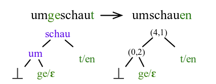
Representative work
String-Transduction
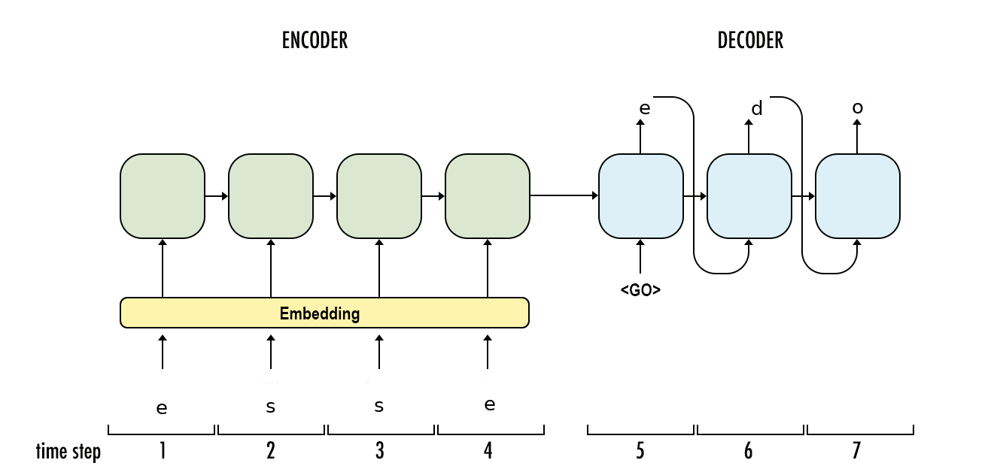
Representative work
3 Our work
Improve Lemmatization as String-transduction of Non-standard varieties with Encoder-Decoder
Datasets
Historical Languages
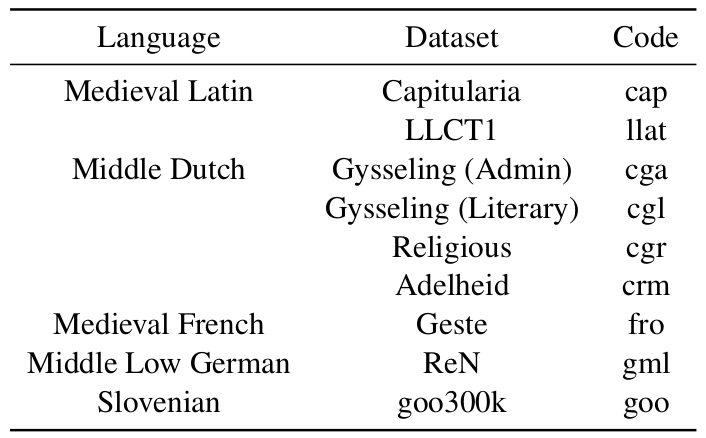
Standard Languages (from Universal Dependencies)
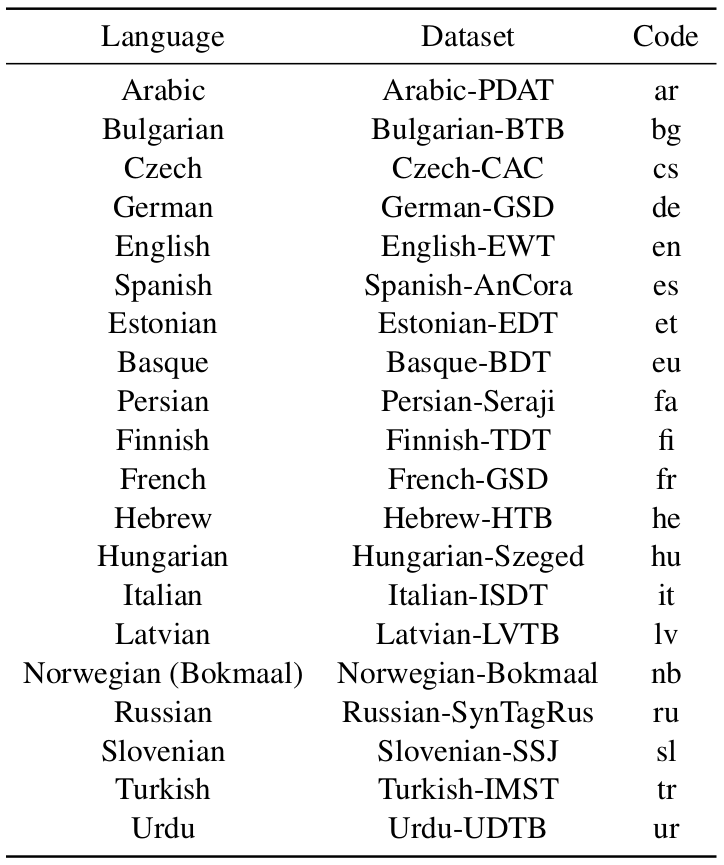
Quantifying Spelling Variation
- Morphological word
pron(pers,1,sing,nominative,"ik")
- “Alloforms”
- “ic”, “jc”, “hic”, “ig”, “ik”, “ict”, …
spelling-variation\(\propto\)#tokens/#morph-words
Morphological Complexity by Spelling Variation
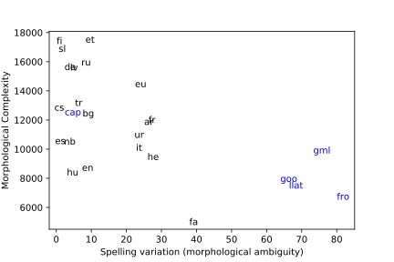Model
Recap: Standard Encoder-Decoder
Conditioning the decoder on jointly-learned sentence-level context vector
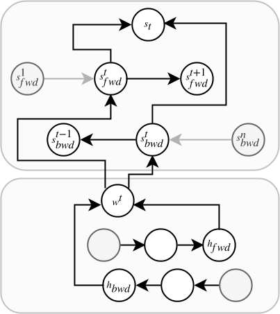
Is the training signal coming from the lemma decoder enough?
Joint Learning with a Bidirectional Language Model Loss
Inspection of LMs through auxiliary tasks shows that LMs internally model quite a deal of linguistic structure
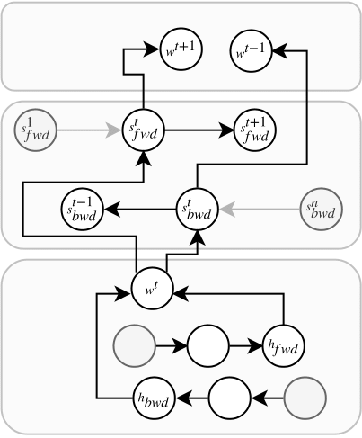
4 Results
Numbers
Historical Languages

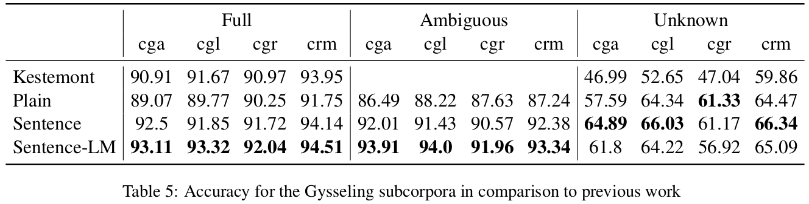
- Efficient for historical languages (especially ambiguous tokens)
- Less efficient on unknown tokens
Standard Languages
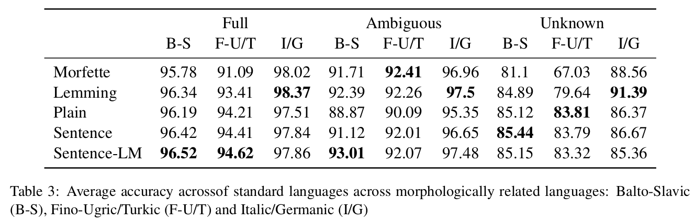
- Efficient for highly fusional (B-S) and morphologically complex languages (F-U/T)
- Less efficient on unknown tokens
- On analytic and less morphologically complex languages (I/G) edit-tree approaches are very effective
Interpretations
Correlation between error reduction and ambiguity
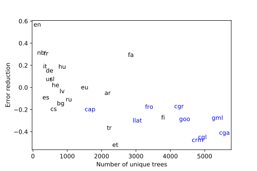How does the LM-loss help?
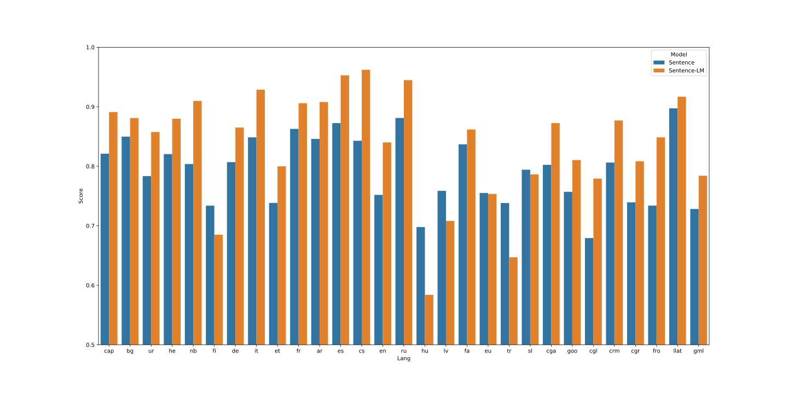Future work
- Why not use training signal from POS-tags and morphological annotation?
- What about pre-training?